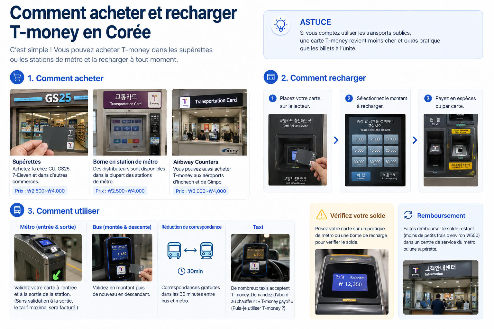
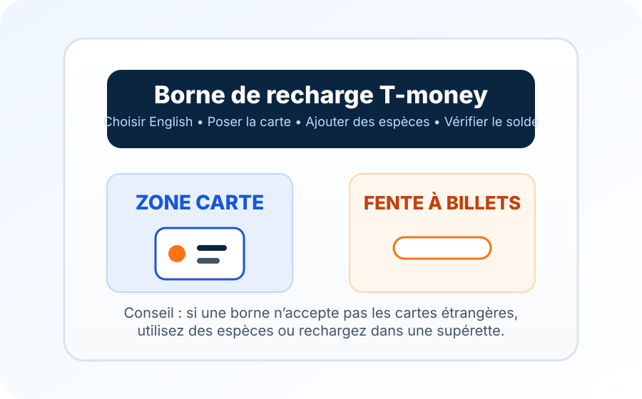

« J’ai acheté la carte, mais le portillon indique un solde nul. »
L’achat de la carte et son chargement sont deux étapes distinctes. Allez à une machine ou dans une supérette participante et ajoutez des wons avant de réessayer le portillon.
La plupart des visiteurs n’ont pas besoin de comprendre tout le système de paiement des transports coréens. Ils veulent surtout un moyen qui fonctionne quand le trajet depuis l’aéroport se termine et que les déplacements en ville commencent. La carte physique T-money remplit toujours bien ce rôle : ajoutez des wons, validez au portillon ou au lecteur du bus, puis utilisez la même carte dans une grande partie du réseau de transports publics coréen.
Depuis juillet 2025, T-money existe aussi dans Apple Wallet sur les iPhone et Apple Watch compatibles. Cela semble le choix évident jusqu’à la règle de recharge : Apple exige actuellement une carte de crédit ou de débit émise en Corée du Sud pour ajouter de l’argent dans Wallet. Pour beaucoup de visiteurs étrangers, la carte physique reste la solution la moins compliquée.

Le bon format de T-money dépend moins de la technologie qui paraît la plus simple que de la manière dont vous pouvez le recharger.
| T-money physique | T-money dans Apple Wallet | Application KOREA TOUR CARD Tmoney | |
|---|---|---|---|
| Pour qui ? | La plupart des visiteurs, surtout ceux qui n’ont que des cartes de paiement étrangères | Les utilisateurs d’iPhone ou d’Apple Watch possédant déjà une carte de paiement coréenne compatible | Les voyageurs avec un Android NFC compatible qui souhaitent une solution mobile |
| Comment l’obtenir | Acheter la carte après l’arrivée | Ajouter une carte T-money prépayée dans Apple Wallet | Créer et gérer T-money via l’application KOREA TOUR CARD Tmoney |
| Comment la recharger | Les espèces aux machines du métro ou dans les supérettes participantes sont le choix le plus sûr par défaut | Apple Wallet ou Mobile T-money ; la recharge via Wallet exige actuellement une carte de crédit ou de débit coréenne | L’application officielle annonce actuellement la recharge et le remboursement avec les cartes internationales acceptées |
| Principale limite | Il faut porter la carte et parfois prévoir des espèces pour la recharge | Une carte étrangère seule ne résout pas le problème de recharge dans Wallet | La compatibilité du téléphone et du NFC compte : vérifiez l’application avant d’en dépendre |
Pour un court voyage, choisir la carte physique n’a rien de dépassé. C’est souvent la version qui impose le moins de complications à un visiteur étranger.
VisitKorea indique actuellement les supérettes GS25, CU et 7-ELEVEN dans tout le pays, ainsi que les centres d’information des stations des lignes 1 à 8 du métro de Séoul. Le prix courant annoncé est d’environ 3 000 à 5 000 ₩, mais il peut varier selon le modèle et le vendeur.
Pour la plupart des visiteurs, il y a peu de raisons d’acheter la carte avant le départ. L’achat après l’arrivée est normalement simple. Cherchez le logo T-money dans une supérette ou une station plutôt qu’une version touristique particulière.
Le prix de la carte et le solde qu’elle contient sont distincts. Si vous achetez la carte puis allez directement au portillon sans la recharger, la carte seule ne paiera pas votre trajet.
Il y a rarement une bonne raison de charger beaucoup d’argent dès le premier jour.
Pour un court séjour à Séoul, Korea Inside conseille généralement de commencer par environ 20 000 à 30 000 ₩, puis de recharger au besoin. C’est un conseil de préparation, pas une règle officielle T-money. Vos dépenses dépendent de la fréquence des trajets, des distances et de l’utilisation éventuelle du solde chez les commerçants participants.
Commencer avec un petit montant simplifie aussi la fin du séjour. Quelques milliers de wons restants sont bien moins gênants qu’un gros solde à faire rembourser au dernier moment avant l’aéroport.
Pour une T-money physique classique, mieux vaut toujours prévoir des espèces lorsqu’on vient de l’étranger. Les machines du métro sont simples une fois la fente à billets repérée ; les supérettes participantes peuvent aussi recharger la carte.
Ne confondez pas ces machines avec les nouvelles bornes de Séoul acceptant les cartes internationales. En 2026, la ville a étendu le paiement par carte étrangère sur de nouvelles bornes pour certains produits, comme les forfaits courts Climate Card et les billets à trajet unique. Cela ne signifie pas que toutes les machines de recharge T-money acceptent désormais une carte étrangère.
Si une machine refuse votre carte, inutile de répéter le même paiement. Utilisez des wons ou faites recharger la T-money dans une supérette participante.
Le solde affiché au portillon ou à la machine suffit à la plupart des visiteurs. Rechargez lorsqu’il baisse, plutôt que de tenter de calculer tous les trajets à l’avance.


Après le premier trajet, le geste est simple : validez une fois à l’entrée du métro, puis à la sortie. La validation de sortie termine le trajet et permet au système de calculer le tarif.
Prenez la même habitude dans les bus : validez en montant, puis avant de descendre.
Cette deuxième validation s’oublie facilement quand la porte est ouverte et que tout le monde descend. Elle compte pourtant : pour calculer une réduction de correspondance, le système doit savoir où le premier trajet s’est terminé et où le suivant commence.
Si vous validez correctement entre des bus et métros admissibles, T-money peut appliquer automatiquement la réduction correspondante. Le délai précis varie selon le réseau et l’heure. Inutile de transformer cette habitude simple en étude d’horaires : validez correctement à chaque fois.
Le métro et les bus urbains sont la raison principale d’acheter T-money, mais son réseau dépasse Séoul.
Le guide officiel actuel indique une couverture métro et bus dans de nombreuses régions coréennes, dont les grands réseaux métropolitains. Il mentionne aussi les taxis dans un grand nombre de villes et de comtés.
L’acceptation dans les taxis n’est pas totalement uniforme. T-money prévient que des restrictions régionales peuvent s’appliquer : mieux vaut repérer un lecteur ou le logo T-money que supposer que tous les taxis acceptent le solde.
T-money fonctionne aussi dans les commerces et lieux partenaires affichant la marque d’acceptation correspondante. C’est utile pour un achat occasionnel en supérette, mais considérez-la comme une carte de transport avec quelques usages de paiement supplémentaires, plutôt que comme le remplacement d’une carte bancaire classique.
Certains cars express, transports interurbains, guichets ferroviaires et péages acceptent aussi des produits ou types de cartes T-money particuliers, selon des règles plus spécifiques. Pour préparer un voyage ordinaire, les bus et métros restent les usages de base les plus fiables.
Apple et T-money ont lancé T-money dans Apple Wallet le 21 juillet 2025. Un iPhone ou une Apple Watch compatible peut désormais servir de carte de transport prépayée. L’ancien conseil selon lequel T-money ne peut pas être utilisé sur iPhone n’est donc plus exact.
Apple indique actuellement une compatibilité avec les iPhone Xs et Xr ou ultérieurs sous iOS 17.2 ou ultérieur, et les Apple Watch Series 6 ou Apple Watch SE de 2e génération ou ultérieures sous watchOS 10.2 ou ultérieur. Seule T-money prépayée est prise en charge dans Apple Wallet.
Avec le mode Express activé, vous pouvez approcher l’appareil du lecteur sans ouvrir Wallet à chaque trajet. Le solde est aussi visible dans Wallet.
Pour un visiteur étranger, la question essentielle reste la recharge. Les consignes actuelles de l’assistance Apple exigent une carte de crédit ou de débit émise en Corée du Sud pour acheter ou recharger T-money depuis Apple Wallet.
Avoir un iPhone ne suffit donc pas à justifier de renoncer à la carte physique. Si vos cartes dans Wallet ont été émises hors de Corée, confirmez comment vous pourrez recharger avant de compter uniquement sur T-money numérique.
Une carte T-money ne peut être utilisée que sur un appareil Apple à la fois. Pour disposer de cartes distinctes sur iPhone et Apple Watch, Apple indique que chaque appareil doit avoir sa propre carte.
T-money propose aussi l’application KOREA TOUR CARD Tmoney pour les téléphones Android compatibles.
La fiche officielle actuelle de Google Play indique que l’application peut utiliser le NFC comme T-money, afficher le solde et l’historique et effectuer recharges ou remboursements avec des cartes internationales acceptées, dont Mastercard, Visa, American Express, JCB et UnionPay.
Séoul a également présenté KOREA TOUR CARD comme une solution de recharge par carte étrangère pour les voyageurs sous Android.
Le mot « compatible » compte. Le matériel NFC, la configuration et la prise en charge peuvent varier. Installez et vérifiez donc l’application avant de faire de votre téléphone votre unique carte de transport en Corée.
Un enfant ou adolescent ne doit pas simplement utiliser une T-money adulte en s’attendant à voir apparaître automatiquement le tarif réduit.
VisitKorea indique actuellement que les voyageurs de moins de 18 ans doivent enregistrer leur date de naissance pour bénéficier de la réduction de transport correspondante. Une supérette proposant T-money est un endroit pratique où demander cet enregistrement lors de l’achat.
En famille, faites-le au début du séjour plutôt que de découvrir après plusieurs trajets que la carte facture le tarif adulte.
Un solde insuffisant est généralement un contretemps, pas une catastrophe.
Les machines de recharge et de nombreux portillons affichent le solde restant. Les consignes officielles du métro de Séoul précisent aussi que les machines d’ajustement tarifaire près des portillons peuvent servir lorsque le solde T-money est insuffisant.
Si le solde baisse avant un long trajet, il est plus simple de recharger avant les portillons que de régler le problème avec des personnes qui attendent derrière vous.
Le remboursement du solde T-money est possible, mais c’est un domaine où les anciens guides de voyage peuvent induire en erreur.
Lors de cette vérification d’août 2026, VisitKorea indique que les soldes supérieurs à 50 000 ₩ doivent être remboursés à Tmoney Town, près de la gare de Séoul ; les montants plus petits peuvent être traités en supérette. Certaines anciennes pages touristiques officielles de Séoul affichent encore un seuil inférieur pour les supérettes.
Korea Inside ne recommande donc pas d’organiser un gros remboursement final à partir d’un ancien montant trouvé dans un blog ou une capture. Consultez les consignes actuelles de T-money ou de VisitKorea s’il vous reste un solde important.
Le plus simple est de cesser les grosses recharges en fin de séjour. Gardez assez pour les bus, métros et le trajet d’aéroport restants, puis dépensez progressivement le solde.
Le remboursement du solde et le prix initial de la carte physique sont deux choses différentes. Rendre la carte ne signifie pas forcément récupérer chaque won dépensé au départ.
L’achat de la carte et son chargement sont deux étapes distinctes. Allez à une machine ou dans une supérette participante et ajoutez des wons avant de réessayer le portillon.
Pour une T-money physique classique, les espèces restent le choix le plus sûr par défaut. Les nouvelles bornes de Séoul acceptant les cartes internationales ne prouvent pas que toutes les machines T-money ordinaires les acceptent.
La validation de sortie compte pour les correspondances. Prenez l’habitude de ce deuxième geste, même si vous ne changez pas immédiatement de bus ou de métro.
Les taxis l’acceptent largement, mais pas tous. Le guide d’utilisation de T-money indique lui-même de possibles restrictions régionales. Utilisez un autre moyen de paiement si le véhicule ne peut pas traiter la carte.
Apple Wallet accepte désormais T-money, mais la recharge reste la limite. Apple exige actuellement une carte de crédit ou de débit coréenne pour acheter ou recharger T-money dans Wallet.
Vous pouvez envisager un remboursement du solde, mais les lieux et plafonds sont plus compliqués que l’utilisation de la carte. En fin de voyage, de petites recharges sont généralement plus simples.
Cherchez la marque d’acceptation T-money ou demandez avant de payer. Le paiement en magasin est un complément utile, pas une raison d’en faire votre seul moyen de paiement.
Si votre besoin principal concerne les transports, T-money reste la solution la plus simple.
WOWPASS devient plus pertinent si vous voulez aussi un solde de paiement prépayé coréen, des recharges en devises et des fonctions de gestion de carte. La fonction T-money est intégrée à la même carte physique, mais le solde de paiement WOWPASS et le solde T-money restent distincts.
Si vous savez déjà que vous voulez WOWPASS, son guide explique le fonctionnement concret des deux soldes.
T-money est une carte de transport prépayée utilisée dans une grande partie du réseau de transports publics coréen. Elle sert couramment dans le métro et les bus, ainsi que dans de nombreux taxis et commerces participants.
Les informations actuelles de VisitKorea indiquent les supérettes comme GS25, CU et 7-ELEVEN dans tout le pays, ainsi que les centres d’information des stations des lignes 1 à 8 du métro de Séoul. Cherchez le logo T-money : les stocks et modèles varient selon le point de vente.
VisitKorea indique actuellement environ 3 000 à 5 000 ₩ pour une carte physique classique. Les modèles spéciaux ou autres produits peuvent être proposés à d’autres prix. Le prix de la carte est distinct du solde ajouté pour vos trajets.
Pour un visiteur international, les espèces à une machine de recharge du métro ou dans une supérette participante sont la méthode la plus prévisible. Ne supposez pas que toutes les machines acceptent une carte de crédit ou de débit étrangère.
N’en faites pas votre solution par défaut. Séoul a introduit l’acceptation des cartes internationales sur de nouvelles bornes pour certains produits, dont les forfaits courts Climate Card et les billets à trajet unique. Cela ne signifie pas que la recharge de toutes les cartes T-money physiques accepte les cartes étrangères.
Oui. Apple Wallet prend en charge T-money prépayée depuis le 21 juillet 2025 sur les iPhone et Apple Watch compatibles. Mais Apple exige actuellement une carte de crédit ou de débit émise en Corée du Sud pour acheter ou recharger T-money dans Wallet.
L’application KOREA TOUR CARD Tmoney propose une T-money mobile pour les téléphones Android NFC compatibles. Elle annonce actuellement la recharge et le remboursement via plusieurs réseaux de cartes internationales. Vérifiez la compatibilité de votre appareil avant d’en dépendre.
Oui. Validez à l’entrée et à la sortie du métro. Dans le bus, validez en montant, puis avant de descendre. La validation à la descente compte pour les réductions de correspondance.
De nombreux taxis et commerces participants acceptent T-money, mais pas tous. Vérifiez le logo T-money ou le terminal de paiement, surtout dans les taxis hors des grandes villes.
Aucun montant ne convient à tous les voyages. Pour un court séjour à Séoul, Korea Inside conseille généralement de commencer par environ 20 000 à 30 000 ₩, puis de recharger au besoin, plutôt que de déposer immédiatement un gros solde.
Oui, selon les règles actuelles et les limites des points de remboursement. En août 2026, VisitKorea indique que les soldes supérieurs à 50 000 ₩ sont remboursés à Tmoney Town, près de la gare de Séoul, et les montants plus petits dans les supérettes. Vérifiez les dernières consignes avant de compter sur un lieu précis.
Si vous avez surtout besoin du bus et du métro, T-money est généralement plus simple. WOWPASS est plus utile si vous souhaitez aussi payer vos achats avec un solde prépayé, l’alimenter en devises acceptées et gérer la carte dans une application. Consultez le comparatif T-money et WOWPASS de Korea Inside pour tous les détails.
Informations actuelles sur l’acceptation dans le métro, les bus, les taxis et les autres transports.
Points de vente, prix courants, recharge et remboursement : informations actuelles destinées aux visiteurs.
Date de lancement, appareils compatibles, mode Express et conditions de recharge T-money.
Condition actuelle d’achat et de recharge T-money dans Apple Wallet : carte de paiement émise en Corée du Sud.
Périmètre d’acceptation des cartes internationales aux nouvelles bornes du métro de Séoul en 2026.
Application touristique Android officielle de T-money, utilisation du NFC et cartes internationales de recharge actuellement annoncées.
Dernière vérification : août 2026
Les moyens de paiement T-money, les points de remboursement, les appareils compatibles et l’acceptation dans les transports peuvent changer. Si une carte bancaire, un téléphone ou un lieu de remboursement précis compte pour votre voyage, consultez les indications actuelles de T-money, Apple ou des organismes touristiques officiels, plutôt qu’une ancienne capture.